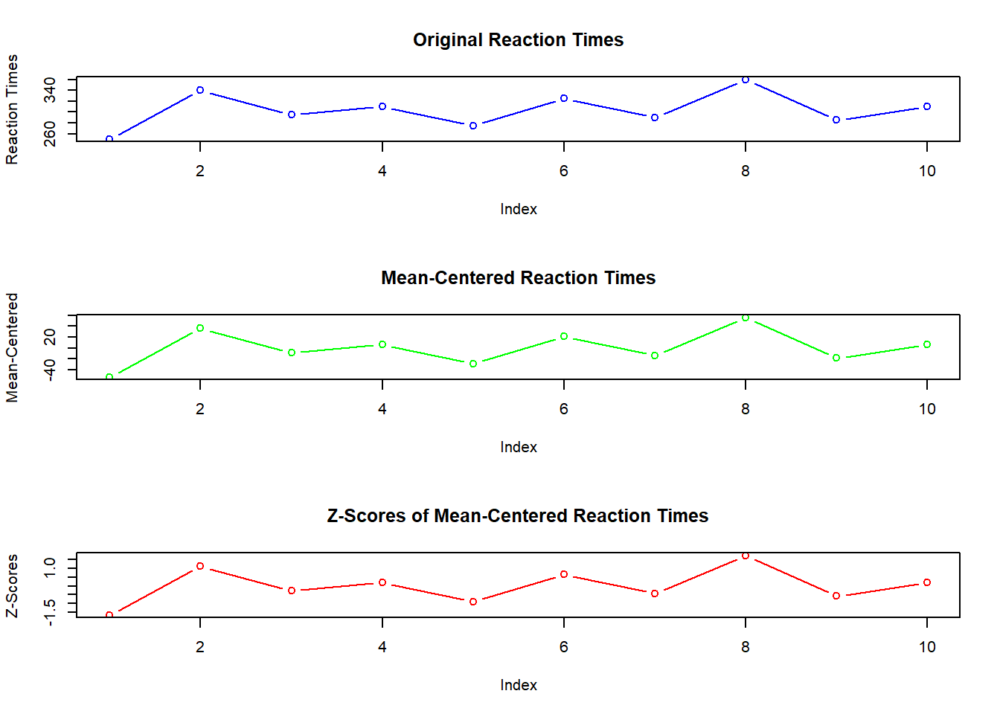

Chapter 6 Linear and Non-Linear Transformations of Data
6.1 Chapter Overview
In the realm of psychological research and data analysis, transforming data is a crucial step to ensure accurate and meaningful interpretations. Chapter 6 delves into the concepts of linear and non-linear transformations of data, focusing on two primary techniques: mean-centering and Z-scores. These transformations play a vital role in preparing data for statistical analysis, making it easier to interpret results and draw valid conclusions.
This chapter is designed to provide a comprehensive understanding of these transformations, enriched with practical examples, real-world applications, and hands-on exercises using R. By the end of this chapter, you will be able to:
Understand the Importance of Data Transformation: Learn why transforming data is essential in statistical analysis and how it can impact your results.
Perform Mean-Centering: Understand the concept of mean-centering, its mathematical formulation, and its application in psychological research. You will learn how to perform mean-centering in R and visualize its effects on data.
Calculate Z-Scores: Grasp the concept of Z-scores, their importance in standardizing data, and their role in comparing different datasets. You will learn to compute Z-scores in R and interpret their meaning.
Combine Transformations: Explore how mean-centering and Z-scores can be used together to enhance data analysis. Practical examples will illustrate the benefits of combining these transformations.
Apply Non-Linear Transformations: Discover various types of non-linear transformations, such as logarithmic, square root, and inverse transformations. Understand when and why to use these transformations and how to implement them in R.
Interpret Real-World Examples: Through practical examples and real-world applications, you will see how these transformations are used in psychological research and other fields.
Hands-On Practice: Engage in exercises designed to reinforce your understanding of the concepts covered. These exercises will provide an opportunity to apply transformations to real datasets and interpret the results.
6.1.0.1 Key Topics Covered
Mean-Centering
Definition and importance
Mathematical formula
Practical examples
Real-world applications
R code implementation
Z-Scores
Definition and importance
Mathematical formula
Practical examples
Real-world applications
R code implementation
Combining Transformations
Mean-centering and Z-scores together
Practical example
R code implementation
Non-Linear Transformations
Introduction to non-linear transformations
Types of non-linear transformations
Practical examples
Real-world applications
R code implementation
By transforming data effectively, researchers can uncover patterns and relationships that might be obscured in the raw data, leading to more robust and reliable conclusions. This chapter will equip you with the knowledge and skills necessary to perform these transformations and apply them in your research projects.
6.2 Mean-Centering
6.2.1 Definition and Importance
Mean-centering is a simple but powerful technique used to adjust data by subtracting the average (mean) of the dataset from each individual data point. This transformation helps to focus on the differences between data points rather than their absolute values, making it easier to compare and interpret the data.
Why is Mean-Centering Important?
- Understanding Data Differences:
- When you mean-center data, youre essentially asking, How does each individual data point compare to the average? This is useful in many types of analysis because it helps you see patterns and relationships more clearly.
- Preparing Data for Further Analysis:
- Mean-centering is often a first step before conducting more complex analyses, as it simplifies the data and makes it easier to work with. For example, if you were comparing test scores between two groups, mean-centering those scores would help you see how each group performs relative to the average.
6.2.2 Mathematical Formula
The mathematical formula for mean-centering is straightforward. For each data point \(X_i\) in a dataset, the mean-centered value \(X_{\text{centered}, i}\) is calculated by subtracting the mean \(\bar{X}\) of the dataset from the original value:
\[ X_{\text{centered}} = X - \bar{X} \]
Where: - \(X\) is the original value. - \(\bar{X}\) is the mean of the dataset. - \(X_{\text{centered}}\) is the mean-centered value.
6.2.3 Practical Examples
Example 1: Mean-Centering a Dataset of Students Test Scores
Imagine you have a list of students test scores, and you want to see how each students score compares to the average score. Heres how you can do that with mean-centering:
Dataset: - Scores: 85, 90, 78, 92, 88, 76, 95, 89, 84, 91
First, calculate the average (mean) score:
\[ \bar{X} = \frac{85 + 90 + 78 + 92 + 88 + 76 + 95 + 89 + 84 + 91}{10} = 86.8 \]
Next, subtract this mean from each students score to get the mean-centered values. This will show how each score compares to the average.
Example 2: Mean-Centering a Dataset of Reaction Times in a Cognitive Experiment
Suppose youre conducting a cognitive experiment where you measure how quickly participants respond to a stimulus. You have the following reaction times (in milliseconds):
Dataset: - Reaction Times: 250, 340, 295, 310, 275, 325, 290, 360, 285, 310
To mean-center these reaction times, start by calculating the average reaction time:
\[ \bar{X} = \frac{250 + 340 + 295 + 310 + 275 + 325 + 290 + 360 + 285 + 310}{10} = 304 \]
Then, subtract this average from each reaction time to see how quickly or slowly each participant responded compared to the average.
6.2.4 Real-World Applications
- Comparing Groups with Different Starting Points:
- Mean-centering is often used in research to make comparisons between groups easier. For instance, if you were comparing stress levels in two different groups of people, and one group started with higher stress levels than the other, mean-centering their stress scores would help you see how much each groups stress changed relative to their own starting point.
- Simplifying Data Interpretation:
- When you have data from multiple sources or categories, mean-centering helps you focus on the relative differences within those categories rather than being distracted by the overall level of the data. This makes it easier to understand and interpret the results.
6.2.5 R Code Implementation
Demonstrating Mean-Centering with R Code
Lets use R to mean-center the dataset of students test scores.
# Sample data: Students' test scores
scores <- c(85, 90, 78, 92, 88, 76, 95, 89, 84, 91)
# Calculate the mean of the scores
mean_scores <- mean(scores)
# Mean-centering the scores
mean_centered_scores <- scores - mean_scores
# Display the mean-centered scores
mean_centered_scores## [1] -1.8 3.2 -8.8 5.2 1.2 -10.8 8.2 2.2 -2.8 4.2Output: The output will show the mean-centered values, which indicate how each students score compares to the average score. A positive value means the score is above average, while a negative value means its below average.
Plotting the Original and Mean-Centered Data
To better visualize the effect of mean-centering, you can plot both the original and mean-centered scores.
## [1] -1.8 3.2 -8.8 5.2 1.2 -10.8 8.2 2.2 -2.8 4.2# Determine y-axis limits to accommodate both original and mean-centered data
y_limits <- range(c(scores, mean_centered_scores))
# Plotting original and mean-centered data
plot(scores, type = "b", col = "blue", ylab = "Scores", xlab = "Index", main = "Original vs Mean-Centered Scores", ylim = y_limits)
lines(mean_centered_scores, type = "b", col = "red")
legend("topright", legend = c("Original", "Mean-Centered"), col = c("blue", "red"), lty = 1)In this plot, the blue line represents the original scores, while the red line represents the mean-centered scores. Notice how the mean-centered scores are centered around zero, making it easy to see how each students performance compares to the average.
This section has introduced the concept of mean-centering, explained its importance, and demonstrated its application using practical examples and R code. By mean-centering your data, you can more easily compare and interpret individual data points relative to the group as a whole. This is a valuable tool in data analysis, helping to reveal patterns and relationships that might otherwise be hidden.
6.3 Z-Scores
6.3.1 Definition and Importance
Z-scores are a statistical measure that describe a values position relative to the mean of a group of values, measured in terms of standard deviations from the mean. In simpler terms, a Z-score tells you how unusual or typical a value is compared to the rest of the data.
Why Are Z-Scores Important?
- Standardizing Data for Fair Comparison:
- Z-scores allow you to compare different datasets or different groups within a dataset, even if they have different means or variations. By converting data to Z-scores, youre essentially putting everything on the same scale.
- Understanding Relative Position:
- Z-scores help you see whether a value is above or below the average, and by how much. This is useful when you want to understand how an individual score compares to the group as a whole.
6.3.2 Mathematical Formula
The formula for calculating a Z-score is:
\[ Z = \frac{X - \bar{X}}{\sigma} \]
Where: - \(X\) is the original value. - \(\bar{X}\) is the mean of the dataset. - \(\sigma\) is the standard deviation of the dataset. - \(Z\) is the Z-score, which tells you how many standard deviations the value \(X\) is from the mean.
6.3.3 Practical Examples
Example 1: Calculating Z-Scores for a Dataset of Exam Scores
Imagine you have a list of exam scores and want to know how each students score compares to the average. Z-scores can help you do this by showing how much each score differs from the average.
Dataset: - Scores: 85, 90, 78, 92, 88, 76, 95, 89, 84, 91
First, calculate the mean (\(\bar{X}\)) and standard deviation (\(\sigma\)) of the scores:
\[ \bar{X} = \frac{85 + 90 + 78 + 92 + 88 + 76 + 95 + 89 + 84 + 91}{10} = 86.8 \]
\[ \sigma = \sqrt{\frac{(85-86.8)^2 + (90-86.8)^2 + \dots + (91-86.8)^2}{10}} = 5.67 \]
Next, calculate the Z-score for each score to see how far each one is from the average:
\[ Z = \frac{85 - 86.8}{5.67} = -0.32 \]
Example 2: Using Z-Scores to Compare Heights of Individuals from Different Age Groups
Lets say you have height data for people in different age groups. By converting their heights to Z-scores, you can compare how tall someone is relative to others in their age group.
Dataset: - Heights: 160, 170, 165, 175, 168, 172, 169, 166, 171, 167
For each age group, you calculate the mean and standard deviation, then convert the heights to Z-scores to see how each individual compares to their peers.
6.3.4 Real-World Applications
- Identifying Outliers:
- Z-scores are often used to spot outliers in a dataset. If a Z-score is very high or very low (typically beyond 2 or 3), it indicates that the value is much higher or lower than the average and might be considered an outlier.
- Comparing Scores in Psychological Assessments:
- In psychological testing, Z-scores can be used to compare an individuals score to a standard or normative sample. For example, Z-scores can show how a persons test results compare to the average results of a larger population.
6.3.5 R Code Implementation
Demonstrating Calculation of Z-Scores with R Code
Lets calculate the Z-scores for our exam scores dataset.
# Sample data: Exam scores
scores <- c(85, 90, 78, 92, 88, 76, 95, 89, 84, 91)
# Calculate the mean of the scores
mean_scores <- mean(scores)
# Calculate the standard deviation of the scores
sd_scores <- sd(scores)
# Calculate the Z-scores
z_scores <- (scores - mean_scores) / sd_scores
# Display the Z-scores
z_scores## [1] -0.2956519 0.5256035 -1.4454095 0.8541056 0.1971013 -1.7739117
## [7] 1.3468589 0.3613524 -0.4599030 0.6898545Output: The output will show the Z-scores for each students exam score. A Z-score above 0 means the score is above average, while a Z-score below 0 means it is below average.
Visualizing Z-Scores Using a Standard Normal Distribution
To better understand how these Z-scores are distributed, we can plot them on a histogram.
# Plotting Z-scores
hist(z_scores, breaks = 10, col = "blue", xlab = "Z-Scores", main = "Histogram of Z-Scores")
abline(v = 0, col = "red", lwd = 2)In this plot:
The histogram shows the spread of Z-scores.
The red vertical line at \(Z = 0\) represents the mean. Scores to the right of this line are above average, and those to the left are below
This section has provided a simplified explanation of Z-scores, their purpose, and practical examples of how they are calculated and used. Z-scores are a valuable tool for standardizing data, making it easier to compare values across different datasets, and for identifying outliers in your data.
6.4 Combining Transformations
6.4.1 Mean-Centering and Z-Scores Together
Sometimes, when analyzing data, you might want to apply both mean-centering and Z-scores to the same dataset. Each transformation has its own purpose, and when used together, they can give you a deeper understanding of your data.
Why Use Both Mean-Centering and Z-Scores?
- Mean-Centering:
- Mean-centering is useful for adjusting your data so that the mean of the dataset is zero. This makes it easier to understand how each data point compares to the average.
- Z-Scores:
- Z-scores go a step further by not only centering the data around zero but also scaling it based on the standard deviation. This standardization allows you to see how far each data point is from the mean in terms of standard deviations, making it easier to compare values across different datasets or groups.
When to Combine Them? - You might combine these transformations when you want to center your data (subtract the mean) and also standardize it (divide by the standard deviation). This is particularly useful when you need to compare data points from different groups or when youre preparing data for certain statistical analyses.
6.4.2 Practical Example
Example: Combining Mean-Centering and Z-Scores in a Dataset of Reaction Times
Lets say youre working with reaction time data from an experiment. You want to know not only how each participants reaction time compares to the average (mean-centering) but also how it compares in terms of standard deviations from the mean (Z-scores).
Dataset: - Reaction Times (in milliseconds): 250, 340, 295, 310, 275, 325, 290, 360, 285, 310
First, youll mean-center the data to see how each reaction time compares to the average reaction time. Then, youll calculate the Z-scores to understand how each reaction time compares to the overall distribution of times in terms of standard deviations.
6.4.3 R Code Implementation
Lets walk through how to perform both transformations using R.
# Sample data: Reaction times in milliseconds
reaction_times <- c(250, 340, 295, 310, 275, 325, 290, 360, 285, 310)
# Step 1: Calculate the mean of the reaction times
mean_reaction_time <- mean(reaction_times)
# Step 2: Mean-center the reaction times
mean_centered_times <- reaction_times - mean_reaction_time
# Step 3: Calculate the standard deviation of the original reaction times
sd_reaction_time <- sd(reaction_times)
# Step 4: Calculate Z-scores for the mean-centered reaction times
z_scores_centered <- mean_centered_times / sd_reaction_time
# Display the mean-centered reaction times
mean_centered_times## [1] -54 36 -9 6 -29 21 -14 56 -19 6## [1] -1.6762608 1.1175072 -0.2793768 0.1862512 -0.9002141 0.6518792
## [7] -0.4345861 1.7383445 -0.5897954 0.1862512Output:
The
mean_centered_timeswill show how each reaction time differs from the average reaction time.The
z_scores_centeredwill show how many standard deviations each mean-centered reaction time is from the mean.
Visualizing the Transformations
To better understand the effects of these transformations, lets plot the original reaction times, the mean-centered reaction times, and the Z-scores.
# Plotting original, mean-centered, and Z-scores
par(mfrow = c(3, 1)) # Set up the plotting area to have 3 plots, one above the other
# Plot original reaction times
plot(reaction_times, type = "b", col = "blue", ylab = "Reaction Times", xlab = "Index", main = "Original Reaction Times")
# Plot mean-centered reaction times
plot(mean_centered_times, type = "b", col = "green", ylab = "Mean-Centered", xlab = "Index", main = "Mean-Centered Reaction Times")
# Plot Z-scores of mean-centered reaction times
plot(z_scores_centered, type = "b", col = "red", ylab = "Z-Scores", xlab = "Index", main = "Z-Scores of Mean-Centered Reaction Times")
Explanation of the Plots:
Original Reaction Times (Blue):
- This plot shows the raw reaction times as they were originally measured.
Mean-Centered Reaction Times (Green):
- This plot shows the reaction times after subtracting the average reaction time. The data is now centered around zero, making it easier to see how each time compares to the average.
Z-Scores of Mean-Centered Reaction Times (Red):
- This plot shows the reaction times after both mean-centering and standardizing them. The Z-scores tell you how far each mean-centered time is from the average in terms of standard deviations, making it easier to identify outliers or unusual reaction times.
6.4.4 Summary
By combining mean-centering and Z-scores, you gain a more nuanced understanding of your data. Mean-centering adjusts the data so that the average is zero, highlighting deviations from the mean. Z-scores take this a step further by scaling these deviations in terms of standard deviations, allowing for easier comparison across different datasets or groups. This combined approach is particularly useful in psychological research and data analysis, where understanding relative differences and standardizing data are key to drawing accurate conclusions.
6.5 Non-Linear Transformations
6.5.1 Introduction to Non-Linear Transformations
In data analysis, not all data behaves in a simple, straightforward way. Sometimes, the relationship between variables is not linear, meaning that the data doesnt follow a straight line when graphed. In such cases, non-linear transformations can be helpful. These transformations change the scale or distribution of the data in a way that makes it easier to analyze and interpret.
When and Why Are Non-Linear Transformations Used?
- Handling Skewed Data:
- Sometimes, data can be skewed, meaning that it is not evenly distributed. For example, if most people in a dataset earn a low income, but a few people earn very high incomes, the data will be right-skewed. Non-linear transformations, like the logarithmic transformation, can help to pull in extreme values and make the distribution more balanced.
- Stabilizing Variance:
- In some datasets, the variability (or spread) of the data might change depending on the value of the variable. For instance, reaction times might have more variability for slower responses than for faster ones. A square root transformation can stabilize this variance, making the data easier to analyze.
- Meeting Assumptions of Statistical Tests:
- Many statistical tests assume that the data follows a normal distribution (a bell-shaped curve). Non-linear transformations can help make the data conform more closely to these assumptions, which makes the results of statistical tests more reliable.
6.5.2 Types of Non-Linear Transformations
There are several common types of non-linear transformations, each useful in different situations:
- Logarithmic Transformation
The logarithmic transformation (often simply called a log transformation) is used to reduce the impact of extreme values in a dataset. It is particularly useful for right-skewed data, where a few very large values dominate the dataset.
Formula: \[ Y_{\text{log}} = \log(X) \]
Example: If you have income data where most people earn between $30,000 and $50,000 but a few people earn millions, applying a log transformation can make the distribution of incomes more normal.
- Square Root Transformation
The square root transformation is often used to stabilize variance. Its useful when the data has a wider spread at higher values.
Formula:
\[ Y_{\text{sqrt}} = \sqrt{X} \]
- Example: If you have reaction time data where the variability increases with longer times, applying a square root transformation can reduce this variability, making the data more consistent.
- Inverse Transformation
The inverse transformation is used to flip the data and reduce the impact of large values. This transformation is useful when high values in the dataset need to be compressed.
Formula:
\[ Y_{\text{inv}} = \frac{1}{X} \]
- Example: Inverting the data can help with situations where large values need to be brought closer to smaller values, such as with response times in tasks where quicker responses are more common.
6.5.3 Practical Examples
Example 1: Logarithmic Transformation of Income Data to Reduce Skewness
Lets consider a dataset of annual incomes where most people earn between $30,000 and $50,000, but a few earn much more, even up to $1,000,000. This type of data is likely to be right-skewed. Applying a logarithmic transformation can help pull in the higher incomes and make the distribution more balanced.
Example 2: Square Root Transformation of Reaction Time Data to Stabilize Variance
Imagine youre analyzing reaction times in an experiment, and you notice that the variability of response times is larger for slower responses. By applying a square root transformation, you can stabilize the variance, making the data easier to interpret and analyze.
6.5.4 Real-World Applications
Use in Psychological Research:
- In psychological studies, non-linear transformations are often used to meet the assumptions of statistical tests. For example, when analyzing response times or survey data, researchers might use square root or log transformations to normalize the data.
Application in Economic Data:
- Economic data, such as income or wealth distributions, are often heavily skewed. Logarithmic transformations are commonly used in economics to handle these skewed distributions, making the data more suitable for analysis and interpretation.
6.5.5 R Code Implementation
Lets walk through how to apply these non-linear transformations using R.
# Sample data: Income data in thousands of dollars
income <- c(30, 45, 70, 120, 25, 60, 100, 85, 40, 300)
# Logarithmic Transformation
log_income <- log(income)
# Square Root Transformation
sqrt_income <- sqrt(income)
# Inverse Transformation
inv_income <- 1 / income
# Display the transformed data
log_income## [1] 3.401197 3.806662 4.248495 4.787492 3.218876 4.094345 4.605170 4.442651
## [9] 3.688879 5.703782## [1] 5.477226 6.708204 8.366600 10.954451 5.000000 7.745967 10.000000
## [8] 9.219544 6.324555 17.320508## [1] 0.033333333 0.022222222 0.014285714 0.008333333 0.040000000 0.016666667
## [7] 0.010000000 0.011764706 0.025000000 0.003333333Output:
log_income: This will show the income data after applying a logarithmic transformation. The larger values will be pulled in, reducing the skewness of the data.sqrt_income: This will show the income data after applying a square root transformation. This transformation helps stabilize variance in the data.inv_income: This will show the income data after applying an inverse transformation. The largest values will be compressed more than the smaller ones.
Visualizing the Transformations
To see how these transformations affect the data, lets plot the original and transformed datasets.
# Set up the plotting area to have 2x2 plots
par(mfrow = c(2, 2))
# Plot original income data
hist(income, breaks = 10, col = "blue", xlab = "Income", main = "Original Income")
# Plot log-transformed income data
hist(log_income, breaks = 10, col = "green", xlab = "Log(Income)", main = "Log Transformed Income")
# Plot square root-transformed income data
hist(sqrt_income, breaks = 10, col = "orange", xlab = "Sqrt(Income)", main = "Square Root Transformed Income")
# Plot inverse-transformed income data
hist(inv_income, breaks = 10, col = "red", xlab = "1/Income", main = "Inverse Transformed Income")Explanation of the Plots:
Original Income Data (Blue):
- This plot shows the original distribution of income data, which might be skewed if there are a few very large values.
Log-Transformed Income Data (Green):
- The log transformation reduces the impact of the large incomes, resulting in a more balanced distribution.
Square Root-Transformed Income Data (Orange):
- The square root transformation helps stabilize the variance, making the spread of the data more consistent across different income levels.
Inverse-Transformed Income Data (Red):
- The inverse transformation compresses the larger values, flipping and bringing them closer to the smaller values.
6.5.6 Summary
Non-linear transformations are powerful tools that allow you to handle skewed data, stabilize variance, and meet the assumptions of statistical tests. By applying transformations like logarithmic, square root, or inverse, you can make your data more suitable for analysis and easier to interpret. These techniques are commonly used in psychological research, economics, and other fields where data may not always follow a straightforward, linear pattern.
6.6 Chapter Summary
In this chapter, we explored various data transformation techniques, focusing on both linear and non-linear transformations. These transformations are essential tools in data analysis, helping to prepare and modify data to meet the assumptions of statistical tests, reduce skewness, stabilize variance, and make data more interpretable.
Key Takeaways:
- Mean-Centering:
- Definition: Mean-centering involves subtracting the mean of the dataset from each data point, effectively centering the data around zero.
- Importance: It simplifies the interpretation of data by focusing on how each value compares to the average, and it is often used as a preparatory step in data analysis.
- Application: Mean-centering is particularly useful when comparing groups or preparing data for more complex analyses.
- Z-Scores:
- Definition: A Z-score standardizes data by measuring how far a value is from the mean, in terms of standard deviations.
- Importance: Z-scores allow for direct comparison between different datasets or groups, even if they have different means or variances. They also help identify outliers.
- Application: Z-scores are widely used in psychological assessments and in any analysis where comparing standardized values is important.
- Combining Transformations:
- Purpose: Combining mean-centering and Z-scores provides a more nuanced understanding of data, particularly when both centering and scaling are needed.
- Application: This combination is useful in various analytical contexts, especially when preparing data for regression analysis or other statistical tests.
- Non-Linear Transformations:
- Logarithmic Transformation: Reduces skewness by pulling in extreme values, making data more normally distributed.
- Square Root Transformation: Stabilizes variance, especially useful for data where variability increases with the value.
- Inverse Transformation: Compresses large values, useful when dealing with data that has extreme high values.
- Importance: Non-linear transformations are crucial when data does not meet the assumptions of linearity or normality, and they are often applied in psychological research, economics, and other fields dealing with skewed or heteroscedastic data.
Practical Application: Throughout the chapter, we demonstrated how to apply these transformations using R, providing practical examples and R code implementations. These examples showed how transformations can make data more suitable for analysis, ultimately leading to more accurate and meaningful results.
Conclusion: Data transformations, whether linear or non-linear, are powerful tools that can greatly enhance the clarity and reliability of your data analysis. By understanding when and how to apply these transformations, you can ensure that your data is in the best possible shape for whatever statistical tests or analyses you plan to perform. As you move forward in your studies, remember that mastering these foundational techniques will be invaluable in your research and data analysis endeavors.
6.7 Practice Exercises
These exercises are designed to reinforce your understanding of the concepts covered in this chapter, including mean-centering, Z-scores, and non-linear transformations. For each exercise, you will apply these transformations to provided datasets, interpret the results, and understand their implications.
6.7.1 Exercise 1: Mean-Centering
Dataset:
- A dataset of monthly expenses (in dollars): expenses <- c(1200, 1500, 1100, 1800, 1300, 1700, 1250, 1400, 1600, 1350)
Tasks:
1. Calculate the mean of the expenses.
2. Mean-center the dataset by subtracting the mean from each value.
3. Plot the original and mean-centered expenses on the same graph.
4. Interpretation: Describe how the mean-centered values relate to the average expense. What does a positive or negative mean-centered value indicate?
6.7.2 Exercise 2: Z-Scores
Dataset:
- A dataset of test scores: test_scores <- c(65, 78, 82, 91, 70, 88, 75, 95, 80, 85)
Tasks:
1. Calculate the mean and standard deviation of the test scores.
2. Compute the Z-scores for each test score.
3. Create a histogram of the Z-scores and add a vertical line at Z = 0.
4. Interpretation: Explain what a Z-score greater than 0 or less than 0 indicates about a test score relative to the average. How would you identify outliers using Z-scores?
6.7.3 Exercise 3: Combining Mean-Centering and Z-Scores
Dataset:
- A dataset of reaction times (in milliseconds): reaction_times <- c(250, 340, 295, 310, 275, 325, 290, 360, 285, 310)
Tasks:
1. Mean-center the reaction times.
2. Calculate the Z-scores for the mean-centered reaction times.
3. Plot the original reaction times, mean-centered times, and Z-scores on separate graphs.
4. Interpretation: Discuss the effect of applying both transformations. How do the Z-scores help you understand the reaction times in comparison to the mean-centered data?
6.7.4 Exercise 4: Non-Linear Transformations
Dataset:
- A dataset of annual incomes (in thousands of dollars): income <- c(30, 45, 70, 120, 25, 60, 100, 85, 40, 300)
Tasks:
1. Apply a logarithmic transformation to the income data.
2. Apply a square root transformation to the income data.
3. Apply an inverse transformation to the income data.
4. Plot histograms of the original and transformed datasets.
5. Interpretation: Compare the distributions of the original and transformed data. How does each transformation affect the spread and shape of the data? When might each transformation be most useful?